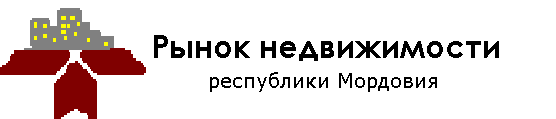
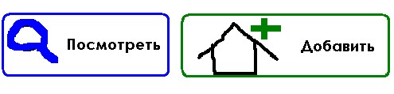

Новость:
Хуё-моё. Интересная новость про недвижимость. Интересная новость про недвижимость Мордовии...
Еще новости

По вопросам работы сайт обращаться на Qdashkin@pochta.ru . ООО "Рынок недвижимости республики Мордовия". © 2012.